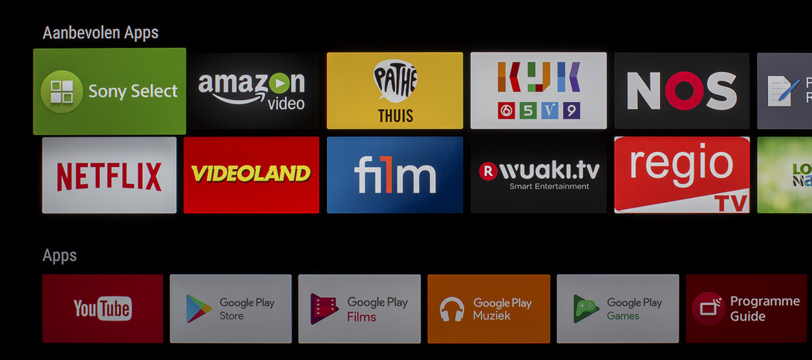
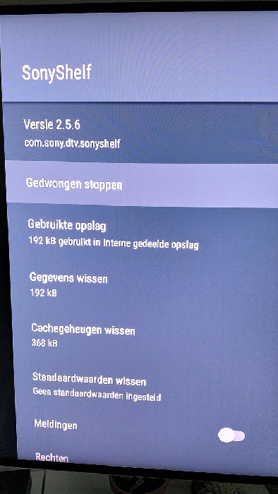
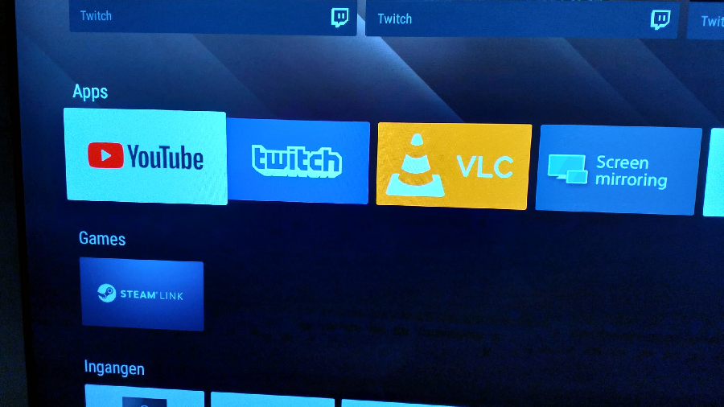

Debloat your Sony smart TV
Debloat your Sony smart TV
Here's a little tweak for your Sony smart TV that runs Android.
The start screen for these TV's (at least mine did) has a section that shows you recommended apps. Having things recommended for me by some """algorithm""" has become somewhat of an annoyance and the stuff it was showing me wasn't really helpful. Not terrible mind you, but I never clicked on a single one of them.

It wasn't until I installed VLC to play some videos of a USB stick. Every time I wanted to start the app, it was all the way at the end of my 'recommended' apps. Now this was a problem. Not only taking up space, but also getting in the way. That crap needed to go.
After digging through all the settings and options in the settings menu I wasn't able to find anything that referred to that section on the start screen and the manual (yes, I opened, and read it! ... well skimmed it) did mention it, but only its existence on the screen, no options.
Turns out, there's a system app on the TV called SonyShelf that's in charge of that portion of the screen.

Sorry about the Dutch text :-)Force close -> Gedwongen stoppen.
Notifications -> Meldingen.
- Open the settings menu.
- Go to the Apps section and open it.
- Scroll all the way down to where you see the SonyShelf app and select it.
- Click "Force close" and disable notifications.
- Done.
A garbage free start screen showing a list of installed apps instead of a double row of crap.

It didn't come back after a reboot, I tried, and is also the reason the first image is a pic I found online because I couldn't get it back for a picture... But I assume you might have to repeat this process at some point due to updates and whatnot. Enjoy!